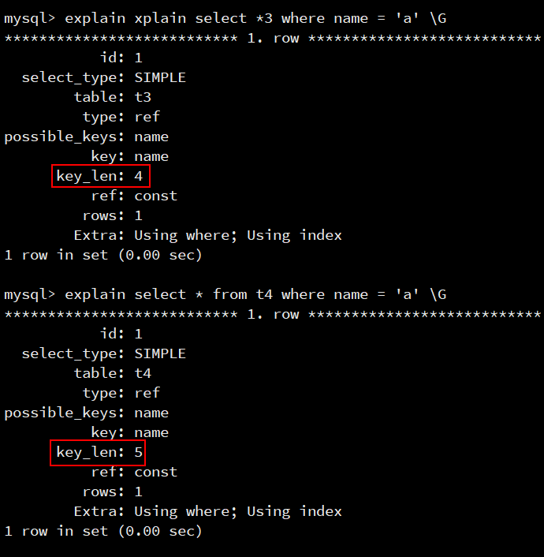

4.选择原则
列选择原则
1.类型选择
字段类型优先级
整型 > date,time > enum,char>varchar > blob
列类型的特点分析:
| 类型 | 说明 |
|---|---|
| 整型 | 定长,没有国家/地区之分,没有字符集的差异 |
| time | 定长,运算快,节省空间. 考虑时区,写sql时不方便 where > ‘2005-10-12’ |
| enum | 能起来约束值的目的, 内部用整型来存储,但与char联查时,内部要经历串与值的转化既然内部用整型，直接自己用整型就好了 |
| char | 定长, 考虑字符集和(排序)校对集 【 排序需要转换， 如，acsii(小a97 大B 66)】 |
| varchar | 不定长，要考虑字符集的转换与排序时的校对集,速度慢 |
| text/Blob | 无法使用内存临时表，只能放在磁盘上 |
附: 关于date/time的选择,大师的明确意见
http://www.xaprb.com/blog/2014/01/30/timestamps-in-mysql/
Do you store date or time values in MySQL?
Would you like to know how to avoid many possible types of pain, most of which you cannot even begin to imagine until you experience them in really fun ways?
Then this blog post is for you. Here is a complete set of rules for how you can avoid aforementioned pain:
All date and time columns shall be INT UNSIGNED NOT NULL, and shall store a Unix timestamp in UTC.
Enjoy all the spare time you’ll have to do actually useful things as a result.性别: 以utf8为例
char(1) , 3个字长字节
enum(‘男’,’女’); // 内部转成数字来存,多了一个转换过程
tinyint() , // 0 1 2 // 定长1个字节.
2.够用就行
够用就行,不要慷慨 (如smallint,varchar(N))
原因: 大的字段浪费内存,影响速度,
以年龄为例 tinyint unsigned not null ,可以存储255岁,足够. 用int浪费了3个字节
以varchar(10) ,varchar(300)存储的内容相同, 但在表联查时,varchar(300)要花更多内存
3.尽量避免用NULL
原因: NULL不利于索引,要用特殊的字节来标注.
在磁盘上占据的空间其实更大.
实验
null
实验1
准备
create table t3(
name char(1) not null default '',
key (name)
) engine myisam;
create table t4(
name char(1) not ,
key (name)
) engine myisam;
insert into t3 values ('a'),('');
insert into t4 values ('a'),(null);分析
select * from t3 where name = 'a';
-- 查看索引使用情况
explain select * from t3 where name = 'a' \G
select * from t4 where name = 'a';
-- 查看索引使用情况
explain select * from t4 where name = 'a' \G效果
使用null列的ken_len更大，因为null更占空间，需要特殊处理
实验2
可以建立2张字段相同的表,一个允许为null,一个不允许为Null,各加入1万条,查看索引文件的大小. 可以发现,为null的索引要大些.(mysql5.5里,关于null已经做了优化,大小区别已不明显)
另外: null也不便于查询,
where 列名=null;
where 列名!=null; 都查不到值,
where 列名 is null ,或is not null 才可以查询.
准备
create table dictnn (
id int,
word varchar(14) not null default '',
key(word)
)engine myisam charset utf8mb4;
create table dictyn (
id int,
word varchar(14),
key(word)
)engine myisam charset utf8mb4;
alter table dictnn disable keys;
alter table dictyn disable keys;
insert into dictnn select id,if(id%2,word,'') from dict limit 10000;
insert into dictyn select id,if(id%2,word,null) from dict limit 10000;
alert table dictnn enable keys;
alter table dictyn enable keys;Enum
Enum列的说明
1: enum列在内部是用整型来储存的
2: enum列与enum列相关联速度最快
3: enum列比(var)char 的弱势—在碰到与char关联时,要转化. 要花时间.
4: 优势在于,当char非常长时,enum依然是整型固定长度.
当查询的数据量越大时,enum的优势越明显.
5: enum与char/varchar关联 ,因为要转化,速度要比enum->enum,char->char要慢,
但有时也这样用—–就是在数据量特别大时,可以节省IO.
试验1
准备
create table enum_t1 (
gender enum('man','woman'),
key(gender)
)engine myisam charset utf8mb4;
insert into enum_t1 values ('man'),('woman');分析
-- emnu实际上用整形存储
SELECT gender FROM enum_t1;
-- 看到的值 1122
SELECT gender+0 FROM enum_t1;实验2
准备
create table t2 (
id int,
gender enum('man','woman'),
key(gender)
)engine myisam charset utf8mb4;
create table t3 (
id int,
gender char(5) not null default '',
key(gender)
)engine myisam charset utf8mb4;
alter table t2 disable keys;
alter table t3 disable keys;
insert into t2 select id,if(id%2,'man','woman') from dict limit 10000;
insert into t3 select id,if(id%2,'man','woman') from dict limit 10000;
alter table t2 enable keys;
alter table t3 enable keys;分析
select count(*) from t2 as ta,t2 as tb where ta.gender=tb.gender;
select count(*) from t3 as ta,t3 as tb where ta.gender=tb.gender;| 列<—->列 | 时间 |
|---|---|
| Enum<—>enum | 10.53 |
| Char<—->char | 24.65 |
| Enum<—->char | 18.22 |
如果t2表的优势不明显, 加大t3的gender列 ,char(15), char(20)…
随着t3 gender列的变大,t2表优势逐渐明显.
原因—-无论enum(‘manmaman’,’womanwomanwoman’) 枚举的字符多长,内部都是用整型表示, 在内存中产生的数据大小不变,而char型,却在内存中产生的数据越来越多.
总结: enum 和enum类型关联速度比较快，Enum 类型 节省了IO
 陕公安备案61092402000103号
陕公安备案61092402000103号